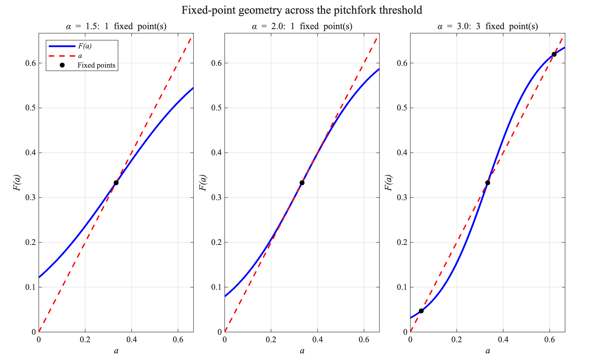

Year 1 · Foundations
Nonlinear Kapitza conduction: existence, stability, and non-uniqueness
My first doctoral year established the nonlinear interface problem that anchors the thesis: steady conduction in a two-layer medium with temperature-dependent Kapitza resistance, analyzed through fixed points, stability, bifurcation, and non-uniqueness.
Doctoral Year 1 · published 2026
MATCOM 2026
Fixed points, stability, and non-uniqueness in nonlinear Kapitza conduction

\[
a=F_{\delta}(a),\qquad
|\partial_aF_{\delta}(a_*)|<1
\;\Longrightarrow\; a_*\text{ locally attracting},
\qquad
q_{\Gamma}=\beta(T_I,T_E)[T]_{\Gamma}.
\]
Inverse design · topology evolution
CITED OPEN-ACCESS FIGUREFrom a distributed design field to a connected thermal layout

Optimization statement
\[\min_{\rho\in\{0,1\}} J(\rho)=\frac12\int_\Omega\bigl(T(\rho)-T_d\bigr)^2\,dx+\lambda\int_\Omega\rho\,dx\]
\[-\nabla\!\cdot\bigl(k(\rho)\nabla T\bigr)=0,\qquad |\Omega_\rho|\le V_{\max}.\]
The changing topology is an optimization history: geometry is updated from thermal sensitivity information while the state equation is repeatedly resolved.